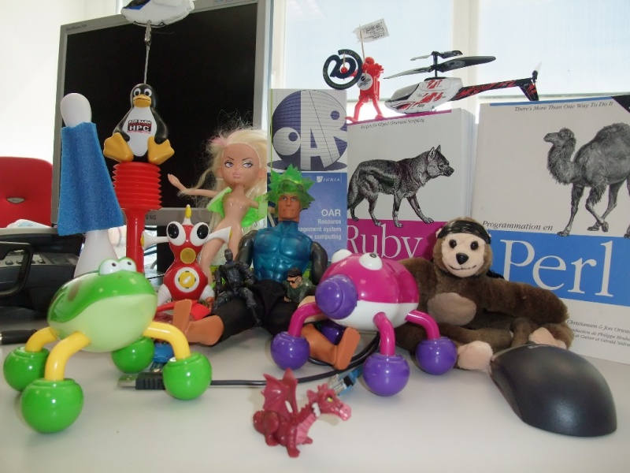
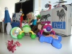

File:Oarteam.jpg
From WikiOAR

Size of this preview: 800 × 600 pixels
Full resolution (1,024 × 768 pixels, file size: 246 KB, MIME type: image/jpeg)
Size of this preview: 800 × 600 pixels
Full resolution (1,024 × 768 pixels, file size: 246 KB, MIME type: image/jpeg)
File history
Click on a date/time to view the file as it appeared at that time.
(Latest | Earliest) View (newer 50) (older 50) (20 | 50 | 100 | 250 | 500)| Date/Time | Thumbnail | Dimensions | User | Comment | |
|---|---|---|---|---|---|
| current | 10:25, 16 March 2009 | 1,024×768 (246 KB) | Oarteam (Talk | contribs) | ||
| 10:04, 16 March 2009 |  | 1,024×768 (248 KB) | Oarteam (Talk | contribs) |
- Edit this file using an external application (See the setup instructions for more information)
File links
The following page links to this file:
Metadata
This file contains additional information, probably added from the digital camera or scanner used to create or digitize it. If the file has been modified from its original state, some details may not fully reflect the modified file.
| Camera manufacturer | FUJIFILM |
|---|---|
| Camera model | FinePix F100fd |
| Exposure time | 1/150 sec (0.0066666666666667) |
| F Number | f/3.3 |
| ISO speed rating | 400 |
| Date and time of data generation | 12:15, 16 March 2009 |
| Lens focal length | 6.4 mm |
| Orientation | Normal |
| Horizontal resolution | 72 dpi |
| Vertical resolution | 72 dpi |
| Software used | GIMP 2.6.1 |
| File change date and time | 11:25, 16 March 2009 |
| Y and C positioning | 2 |
| Exposure Program | Normal program |
| Exif version | 2.2 |
| Date and time of digitizing | 12:15, 16 March 2009 |
| Image compression mode | 2 |
| Shutter speed | 7.22 |
| Aperture | 3.4 |
| Brightness | 3.02 |
| Exposure bias | 0 |
| Maximum land aperture | 3.4 |
| Metering mode | Pattern |
| Light source | Unknown |
| Flash | Flash fired, compulsory flash firing |
| Color space | sRGB |
| Focal plane X resolution | 5017 |
| Focal plane Y resolution | 5017 |
| Focal plane resolution unit | 3 |
| Sensing method | One-chip color area sensor |
| Custom image processing | Normal process |
| Exposure mode | Auto exposure |
| White balance | Auto white balance |
| Scene capture type | Standard |
| Sharpness | 3 |
| Subject distance range | Unknown |

{kind=link}
{kind=link}
{kind=link}
{kind=link}
{kind=link}
{kind=link}
{kind=link}
{kind=link}
{kind=link}
{kind=link}
{kind=link}
{kind=link}
{kind=link}
{kind=link}
{kind=link}
{kind=link}
{kind=link}
{kind=link}
{kind=link}
{kind=link}
{kind=link}
{kind=link}
{kind=link}